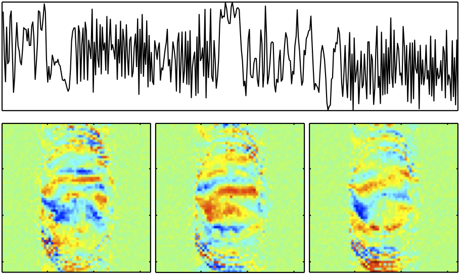

Overview - FMRIB's ICA-based Xnoiseifier - FIX v1.06 beta
FIX attempts to auto-classify ICA components into "good" vs "bad" components, so that the bad components can be removed from the 4D FMRI data. FIX is intended to be run on single-session MELODIC ICA output. See example raw data movies showing the (potentially huge) effect of FIX cleanup. This beta-version of FIX is a set of R, MATLAB and shell scripts and hence requires you to have various other software than just FSL - and for now is not bundled as part of FSL. If you use FIX, please cite these papers:
1. G. Salimi-Khorshidi, G. Douaud, C.F. Beckmann, M.F. Glasser, L. Griffanti S.M. Smith. Automatic denoising of functional MRI data: Combining independent component analysis and hierarchical fusion of classifiers. NeuroImage, 90:449-68, 2014
2. L. Griffanti, G. Salimi-Khorshidi, C.F. Beckmann, E.J. Auerbach, G. Douaud, C.E. Sexton, E. Zsoldos, K. Ebmeier, N. Filippini, C.E. Mackay, S. Moeller, J.G. Xu, E. Yacoub, G. Baselli, K. Ugurbil, K.L. Miller, and S.M. Smith. ICA-based artefact removal and accelerated fMRI acquisition for improved resting state network imaging. NeuroImage, in press, 2014
This latest version (1.06) can now be run without Matlab, using either the supplied precompiled-matlab binaries, or with Octave. The other change from v1.05 is a change in the top-level meta-classifier, which gives a tiny average improvement in classification accuracy. No need to rerun feature generation from v1.05 for use in v1.06, but the old training files cannot be used with v1.06 (and any custom training files will need regenerating).
For FIX to work well, it is very important that it is run using good "training data". While a few example training files are supplied with FIX, for major studies we would strongly recommend training FIX on your study data (see below for more details).
Installing FIX
Requirements:
- MATLAB (though see above...), with official toolboxes:
- Statistics
- Signal Processing
R free statistics software
Setup FIX:
Unpack FIX with tar xvfz fix.tar.gz (or tar xvf fix.tar if your browser has already uncompressed the file).
See the README file for further setup instructions
Running FIX
To run: use the script "fix" in the FIX directory, e.g.:
/usr/local/fix/fix YOURFEAT.feat /usr/local/fix/training_files/Standard.RData 20
You need to feed in a full "first-level" (single-session) output directory created by the MELODIC or FEAT GUIs, with full registration run, including using a structural. If using FEAT, you need to have had ICA turned on in the Prestats. For the ICA you should in general use MELODIC's automatic dimensionality estimation.
The 20 refers to the thresholding of good vs bad components; sensible values are generally in the range of 5-20. However, if it is very important to you that almost no good components are removed, and hence you would prefer to leave in the data a larger number of bad components, then use a low threshold (e.g., in the range 1-5).
It is strongly recommended that you look at the ICA components yourself to check at least a few of your subjects' classifications - look in the file called something like fix4melview_Standard_thr20.txt - the final line lists the components that are considered as noise to be removed (with counting starting at 1 not 0).
When running fix as shown above, you will end up with a cleaned version of the 4D preprocessed FMRI data: filtered_func_data_clean.nii.gz.
If you have a compute cluster you can send the whole command to the cluster by preceding it with something like fsl_sub -q long.q ... (Although, if you are using fix to train the classifier and run leave-one-out testing, we recommend that you run fix locally, if your local computer is able to submit jobs to your cluster, as it will do this for you, parallelising the LOO, and greatly speeding it up.)
Training data
FIX needs to be trained from multiple datasets that have already had the ICA components classified into "good" and "bad" by hand. We have so far hand-trained a few different types of data, and the training file from each of these is supplied with FIX. If you want to train FIX yourself (which in general is recommended), to better optimise it for the kind of data you have, you will need to do this hand classification yourself (at least 10 subjects). Alternatively, you can use one of the training *.RData files supplied with FIX.
There are currently several training-dataset-files supplied:
Standard.RData - for use on more "standard" FMRI datasets / analyses; e.g., TR=3s, Resolution=3.5x3.5x3.5mm, Session=6mins, default FEAT preprocessing (including default spatial smoothing).
HCP_hp2000.RData for use on "minimally-preprocessed" HCP-like datasets, e.g., TR=0.7s, Resolution=2x2x2mm, Session=15mins, no spatial smoothing, minimal (2000s FWHM) highpass temporal filtering.
WhII_MB6.RData derived from the Whitehall imaging study, using multiband x6 EPI acceleration: TR=1.3s, Resolution=2x2x2mm, Session=10mins, no spatial smoothing, 100s FWHM highpass temporal filtering.
WhII_Standard.RData derived from more traditional early parallel scanning in the Whitehall imaging study, using no EPI acceleration: TR=3s, Resolution=3x3x3mm, Session=10mins, no spatial smoothing, 100s FWHM highpass temporal filtering.
To do your own training, for each FEAT/MELODIC output directory, you will need to create a hand_labels_noise.txt file in the output directory. This text file should contain a single line (or, at least, should have as its final line), a list of the bad components only, with the format (for example): [1, 4, 99, ... 140] - note that the square brackets, and use of commas, is required. Counting starts at 1, not 0.
Once you have created all of the hand label files, you can then train the classifier (creating the training file <Training>.RData) using the -t option:
fix -t <Training> [-l] <Melodic1.ica> <Melodic2.ica> ...
If you include the -l option after the training output filename, a full leave-one-out test will be run; the results file that gets created at the end has a set of numbers at the end of it that tell you the true-positive-rate (proportion of "good" components correctly labelled) and the false-positive-rate (proportion of "bad" components correctly labelled) for a wide range of thresholds (see higher up in the output file for the list of thresholds tested).
Using new training data
You can now use your new training file to classify components in new datasets...
fix -c <Melodic-output.ica> <Training.RData> <thresh> classify ICA components (<thresh> is in the range 0-100, typically 20)
...and then run the cleanup on the new data...
fix -a <Melodic-output.ica/fix4melview_TRAIN_thr.txt> [-m] apply cleanup using artefacts listed in the txt file to data inside the enclosing Melodic directory, and optionally remove motion confounds with -m)
Input files required - in more detail
If you haven't done the full GUI-based MELODIC/FEAT analysis, you will need, in one directory:
filtered_func_data.nii.gz preprocessed 4D data
filtered_func_data.ica melodic (command-line program) full output directory
mc/prefiltered_func_data_mcf.par motion parameters created by mcflirt (in mc subdirectory)
mask.nii.gz valid mask relating to the 4D data
mean_func.nii.gz temporal mean of 4D data
reg/example_func.nii.gz example image from 4D data
reg/highres.nii.gz brain-extracted structural
reg/highres2example_func.mat FLIRT transform from structural to functional space
design.fsf FEAT/MELODIC setup file; if present, this controls the
default temporal filtering of motion parameters